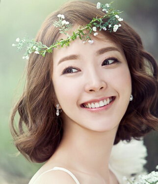
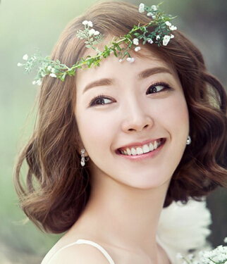

导读：韩式婚礼的浪漫相信不用小编说，大家都是可以感受到的， 同样韩式新娘的美丽也是很多新娘都羡慕的。而今天小编要从韩 式新娘发型上来让我们的新娘真切的感受到韩式婚礼的浪漫与唯美。
这款发型采用低邦的发髻扎法，相对比较简单，但效果很不错， 精致的瓜子脸能展露无暇，搭配珍珍链的发饰时尚感十足!
新娘发型不一定用扎发髻，中长卷的发型也可以非常好看， 正如图中这款，大纱状的花饰飘逸华美，奢华大气， 能提升整个新娘装的品位!
韩式时尚的中短发蛋卷头发型的设计，气质的中分与发尾的 外翻打造出绝美的造型来，清新的笑容更为造型注入一丝活力。 可爱的小脸新娘对于发型的选择当然也没什么可苦恼的了， 简约的盘发搭配上头花的点缀整个造型清新灵动十分的有气质感。
 
